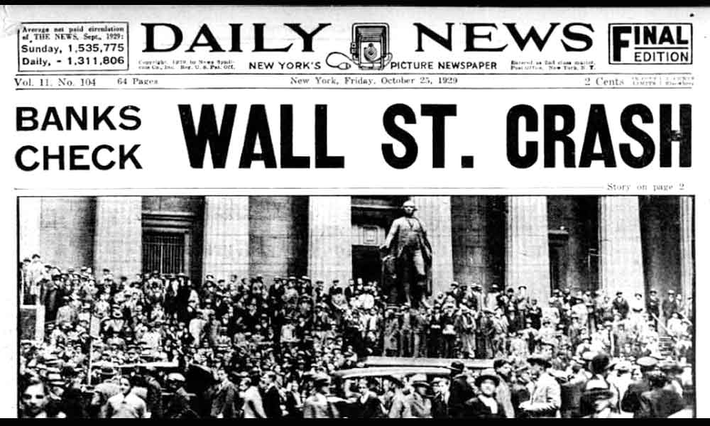
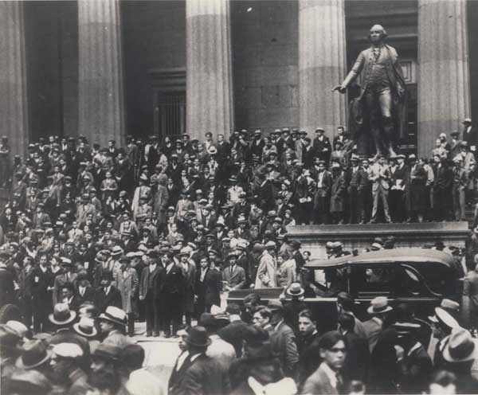

Causas da Crise
O liberalismo econômico nos Estados Unidos, com seu foco no mercado livre e na mínima intervenção do governo, desempenhou um papel crucial nas causas da crise de 1929. Este modelo permitiu o crescimento desregulado de indústrias e bancos.
Leia mais sobre o liberalismo econômico-

- Superprodução industrial e agrícola nos EUA.
- Especulação excessiva na Bolsa de Valores de Nova York.
- Facilidade de crédito e falta de regulação financeira.
- Desigualdade de renda e superprodução industrial.
Crise de 1929 foi caracterizada por "A Grande Depressão" do século XX, e a falta de conhecimento e o consumo excessivo gerou causas e consequências embaraçosas no época. E uma de suas causas foi a Superprodução industrial e agrícola dos EUA. Então eles produziam mais do que comiam Isso fez com que os estoques ficassem "encalhados", o que causou a queda nos preços e trouxe problemas para os produtores.
Outro motivo foi a quantidade de pessoas que compravam ações da bolsa de valores (geralmente de Nova York) sem entender o risco. Pediam muitos empréstimos para investimentos, achando que o valor das ações só subiriam.
Fora a população ter uma parcela de culpa nessa crise, ela não foi a única. Bancos e mercados de ações funcionavam sem regras rígidas. Isso criou uma bolha a ser investigada, ou seja, um crescimento artificial dos valores das ações.
Sem contar que a desigualdade social era muito grande. A riqueza dos EUA estavam com a minoria daquela época. A maior parte daquela população, não tinha poder de compra suficiente para manter o crescimento econômico.
A Quebra da Bolsa
A quebra da bolsa de valores em 1929 foi o evento que marcou o fim do boom econômico e iniciou a Grande Depressão. A crise teve impactos profundos no mercado de trabalho, no consumo e na economia global.
Leia mais sobre a quebra da bolsa-

- A “Quinta-feira Negra” e seus desdobramentos.
- Perda de ações empresariais.
- Pânico generalizado e colapso do sistema financeiros.
- Colapso do sistema financeiro.
A "Quinta-feira Negra" refere-se ao dia 24 de outubro de 1929, quando ocorreu uma queda abrupta no mercado de ações da Bolsa de Valores de Nova York, marcando o início da Grande Depressão. Este evento teve alguns desdobramentos importantes:
Durante a Quinta-feira Negra, muitos investidores perderam grandes quantidades de dinheiro devido à queda brutal nos preços das ações. Muitas empresas também viram seus valores de mercado despencarem, levando a demissões em massa e até mesmo à falência de algumas delas.
A forte queda nas ações gerou pânico entre os investidores, que começaram a vender suas ações desesperadamente para evitar perdas ainda maiores. Esse pânico se espalhou rapidamente pelo mercado financeiro, intensificando a crise.
A "Quinta-feira Negra" não se limitou apenas a um dia, sendo seguida por outras quedas nas semanas seguintes. O colapso do mercado de ações acabou se refletindo em todo o sistema financeiro, causando uma crise econômica sem precedentes e levando a altas taxas de desemprego e pobreza em vários países.
Esses eventos tiveram repercussões globais e demonstraram a fragilidade do sistema financeiro, levando a mudanças regulatórias e políticas para tentar evitar crises semelhantes no futuro.
Consequências Econômicas e Sociais
A crise de 1929 não apenas afetou os Estados Unidos, mas teve repercussões globais, alterando completamente as políticas econômicas e sociais do século 20.
Leia mais sobre as consequências econômicas e sociaisCom a quebra da bolsa de valores, muitos investidores perderam tudo e não conseguiram pagar seus empréstimos, isso levou à falência de milhares de bancos. Por conta da produção em excesso das empresas e com a queda da demanda varias empresas começaram a quebrar por não conseguirem pagar suas contas por não conseguirem créditos com os bancos. A confiança no sistema financeiro desapareceu, e a economia entrou em colapso.
Com a falência de empresas e a paralisação da produção, milhões de trabalhadores foram demitidos, nos Estados Unidos a taxa de desemprego chegou a 27% no início da década de 1930, o que antes era apenas 4%. Famílias inteiras ficaram sem renda, sem casa começaram a viver em barracos improvisados, formando os chamados "Hoovervilles". A miséria se espalhou, e a desigualdade social aumentou drasticamente.
A crise afetou a principal economia do mundo na época , ocorreu uma queda na demanda por produtos estrangeiros, além disso, muitos países implantaram políticas protecionistas, como impostos de importação altos tentando proteger suas economias. Isso reduziu ainda mais o comércio internacional e piorou a crise em escala mundial, causando uma grande queda da economia global.
Com a forte dependência da Europa das exportações dos EUA, causou um grande impacto na Europa simplesmente parando a sua reconstrução pós Primeira Guerra Mundial, Economias que exportavam para os Estados Unidos também foram afetadas, no Brasil, por exemplo, sofreu com a queda nas exportações de café. A crise ajudou a criar um ambiente de instabilidade política e social global.
Respostas à Crise
A Crise de 1929 resultou em uma queda drástica na produção, desemprego em massa e uma longa desaceleração econômica que afetou diversos países. As causas incluem especulação financeira excessiva e políticas econômicas instáveis.
Leia mais sobre as consequências globais
O New Deal foi um conjunto de políticas implementadas nos Estados Unidos entre 1933 e 1939 pelo presidente Franklin D. Roosevelt, com o objetivo de combater os efeitos da Grande Depressão de 1929. Inspirado nas ideias do economista John Maynard Keynes, o New Deal representou uma mudança significativa na atuação do Estado, promovendo intervenção direta na economia.
Principais medidas do New Deal:
- Investimentos em infraestrutura: construção de estradas, pontes, escolas, hospitais e usinas para gerar empregos e dinamizar a economia.
- Regulação financeira: criação da Comissão de Valores Mobiliários (SEC) e aprovação do Glass-Steagall Act, que separou bancos comerciais e de investimento.
- Apoio à agricultura: concessão de subsídios e empréstimos para controlar a produção e estabilizar os preços.
- Direitos trabalhistas: legalização dos sindicatos, jornada de trabalho de 8 horas e estabelecimento do salário mínimo.
- Programas sociais: criação da Previdência Social, seguro-desemprego e assistência a idosos.
Resultados:
O New Deal reduziu o desemprego e ajudou na recuperação econômica, mas a retomada total da economia dos EUA só ocorreu com a Segunda Guerra Mundial, que aumentou a produção industrial e o emprego.
- Fortalecimento da ideia de que o Estado deve atuar na economia.
- Mudanças nas políticas econômicas globais, com mais regulação.
- A crise abriu espaço para regimes autoritários em alguns países (ex: ascensão do nazismo na Alemanha).
A crise de 1929 expôs as limitações do liberalismo econômico clássico, que pregava mínima intervenção do Estado. A resposta à crise, especialmente com o New Deal, marcou o fortalecimento da ideia de que o Estado tem responsabilidade de regular a economia e promover o bem-estar social.
Esse novo papel do Estado ganhou força não só nos EUA, mas também influenciou outras nações, que passaram a adotar políticas intervencionistas em busca de estabilidade econômica e justiça social.
A crise econômica mundial gerou uma mudança significativa nas políticas econômicas de diversos países:
Maior regulação dos mercados financeiros para evitar especulação e colapsos bancários.
Controle da produção e dos preços, especialmente em setores estratégicos como agricultura e indústria.
Criação de programas sociais voltados à proteção dos mais vulneráveis (desempregados, idosos, trabalhadores).
Essa transição marcou o abandono do liberalismo clássico em direção a modelos mais intervencionistas, com o objetivo de evitar novas crises e promover o desenvolvimento sustentável.
A instabilidade econômica e social causada pela crise de 1929 favoreceu o surgimento de regimes autoritários em vários países, aproveitando-se do descontentamento popular com a crise:
Alemanha: A crise foi um dos fatores que possibilitou a ascensão de Adolf Hitler e do nazismo, prometendo restaurar a ordem e a prosperidade.
tália e Espanha: Regimes fascistas ganharam força com promessas semelhantes, recorrendo a governos centralizados e repressivos.
Esses regimes autoritários se aproveitaram do medo, da pobreza e do caos para consolidar o poder e suprimir as instituições democráticas, marcando o cenário político da década de 1930 em diversas partes do mundo.
links
Links utilizados para o trabalho
links